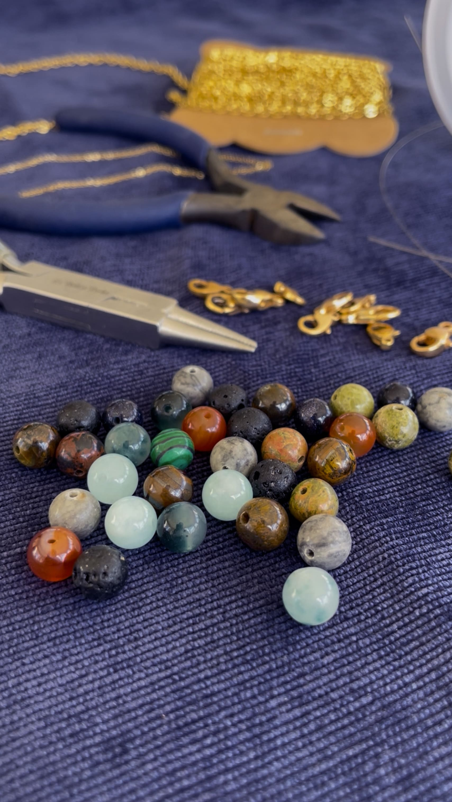

MC Créations
de Mamie
Ce projet s'inscrit dans l'accompagnement d'une créatrice indépendante, dont l'activité
se déploie autour de la réalisation de bijoux, de sacs et de petite maroquinerie.
J’ai mené ce projet de A à Z, en réalisant l’analyse concurrentielle, le cahier des charges, la définition de l’identité visuelle,
la charte graphique, le maquettage UX/UI,
l’intégration Wordpress, la création d’un support de communication (carte de visite) et l’optimisation SEO.